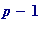
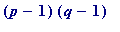
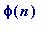

Pohlig-Hellman private -key. Rivest-Shamir-Adelman public-key.
For PH one needs:
1. a 'large' prime
p
2. An integer '
e
' (the encryption power) such that gcd(
e
,
 ) = 1.
) = 1.
3. An integer '
d
' (the decryption power) such that
ed
leaves remainder 1
on division by
(

).
In PH, (
e
,
p
) and (
d
,
p
) constitute the
shared
'private-keys' (anyone who knows one of those keys may quickly calculate the other one, using the extended Euclidean algorithm).
Brief comments.
For a given '
p
' and
'e
' there is ONLY ONE such '
d
' between 1 and (
 ).
).
That '
d
' is quickly found by using the so-called extended Euclidean algorithm.
Requirement #3 is dictated by the mathematics of Fermat's so-called
little
theorem (that's what I mean by hand waving...).
Without requirement #2, #3 could not even come into play...
For RSA one needs:
1. Two 'large' primes
p
and
q
(in the
real world
, 'large' is not good enough, as I will demonstrate in a later section), and then '
n
' - Alice's public modulus - is
defined
by
n = pq
.
2. An integer '
e
' (the
e
ncryption power) such that gcd(
e
,
 ) = 1.
) = 1.
That '

' is '

', the so called (Euler)
phi-value of n
, plays a
fundamental
role...
3. An integer '
d
' (the
d
ecryption power) such that
ed
leaves remainder 1 on division by
 .
.
In RSA, (
e
,
n
) is the
public
-key, while (
d
,
n
) is the
private
-key (and here the
absolute crux
of the matter, the entire rock on which the whole system stands, is that someone who knows the public-key may NOT quickly quickly calculate the private one,
providing
the constructor of the
public modulus
, '
n
', has done so with
due
caution
(e.g., it is NOT enough merely to choose
p
and
q
to be 'large', as I will later demonstrate)
Brief comments.
For a given '
p
', '
q
', and
'e
' there is ONLY ONE such '
d
' between 1 and
 .
.
That '
d
' is quickly found -
knowing
p
and
q
(that '
knowing
' is a
fundamental
point, and is the
entire basis
for the security of the public-key method...) - by using the so-called extended Euclidean algorithm.
Requirement #3 is dictated by the mathematics of 2-prime case of Euler's generalization of Fermat's
little
theorem (more hand waving...).
Again, without requirement #2, #3 could not even come into play...